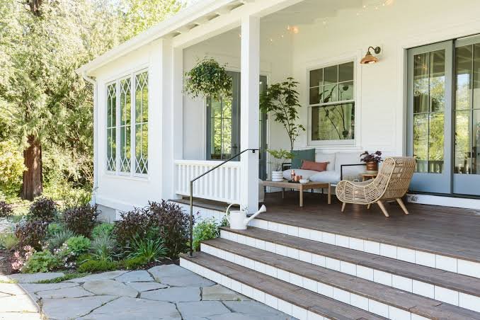

Evening Rest

As evening falls, the sky transforms into colors of orange, pink, and purple. The farmhouse lights turn on, illuminating a warm glow across the field. The farm animals go to sleep, and the hectic energy of the day finally slows down to peace.
Barnaby takes his favorite spot on the wooden porch right next to his owner Kevin’s rocking chair. With a heavy sigh of happiness, he rests his chin on his paws. His eyes close as the crickets begin to chirp, knowing the farm is safe, sound, and ready for another day.